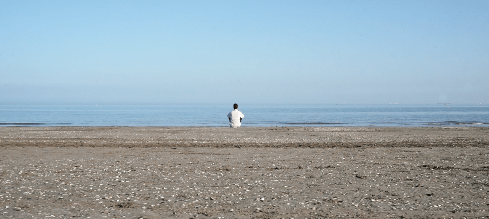

Giacomo
Bozzato
Bozzato


Hi! 👋 I'm a UI designer and photographer from Italy, now based in Sydney, focused on visual storytelling for environment-aware and purpose-driven creative projects.
A glass of water
filmmaking
2019
It's my first shortfilm. Written, shot and edited in spring 2019, with Sebastiano Siviero as sole actor. A glass of water (Un bicchiere d'acqua) explores the theme of traveling in a surrealist and existential way. It was selected among the winners of Premio Giuseppe Gambrinus Mazzotti.
